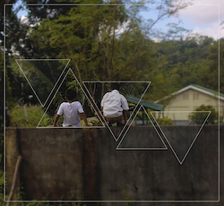

natalie lampa
user experience designer
enterAbout Me
Hi! I'm Natalie. I'm a senior at the University of Michigan pursuing a dual degree between UMSI and LSA in Information (UX Design) and Southeast Asian Studies. I'm interested in web design, photography, and big data visualization. I am comfortable using C++, Python, and Adobe Photoshop CS6.
Outside of academics, I work as a Research Analyst and Developer for the Knowledge Grid team at Michigan Medicine, Scheduling Chair of Welcome Wednesdays at the Alumni Association (AAUM), and Treasurer of the Filipino American Student Association.
Download Resume
UX/UI Projects
Resilience in Ann Arbor Neighborhoods
KGrid: Medication Risk Scale Web App
My Resources Chicago
Programming Projects

KGrid: Risk Score Validator

Letterman
Euchre
Graphic Design Projects
Untitled 1, 2016

Untitled 2, 2016
Untitled 3, 2016